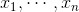
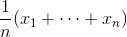
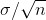
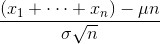
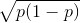
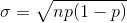
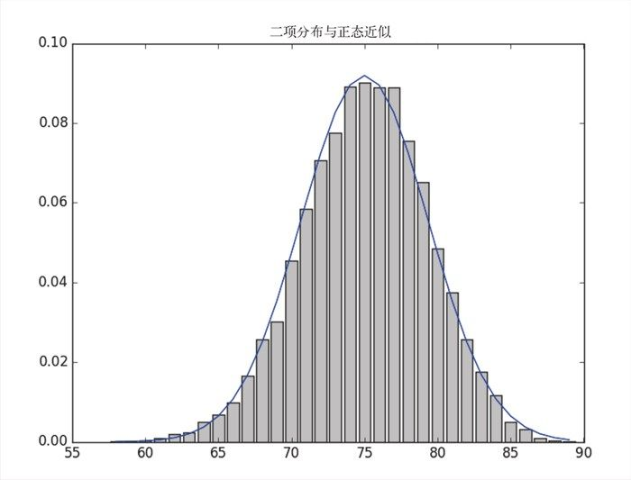

6.7 中心极限定理
正态分布的运用如此广泛，很大程度上归功于中心极限定理 （central limit theorem）。这个定理说，一个定义为大量独立同分布的随机变量的均值的随机变量本身就是接近于正态分布的。
特别地，如果  都是均值为 μ 、标准差为 σ 的随机变量，且 n 很大，那么：

近似正态分布，且均值为 μ ，标准差为  。等价于（其实更常用）：

上式近似正态分布，均值为 0 ，标准差为 1。
举一个易于理解的验证例子——带有 n 和 p 两个参数的二项式 随机变量。一个二项式随机变量 Binonimal(n,p) 是 n 个独立伯努利随机变量 Bernoulli(p) 之和，每个伯努利随机变量等于 1 的概率是 p ，等于 0 的概率是 1-p ：
def bernoulli_trial(p):
return 1 if random.random() < p else 0
def binomial(n, p):
return sum(bernoulli_trial(p) for _ in range(n))
每个伯努利随机变量 Bernoulli(p) 的均值为 p ，标准差为  。根据中心极限定理，当 n 变得很大，一个二项式随机变量 Binonimal(n,p) 近似于一个正态分布的随机变量，其中均值为 μ =np ，标准差为  。如果把两个分布都在图上绘出来，很容易看出相似性：
def make_hist(p, n, num_points):
data = [binomial(n, p) for _ in range(num_points)]
# 用条形图绘出实际的二项式样本
histogram = Counter(data)
plt.bar([x - 0.4 for x in histogram.keys()],
[v / num_points for v in histogram.values()],
0.8,
color='0.75')
mu = p * n
sigma = math.sqrt(n * p * (1 - p))
# 用线形图绘出正态近似
xs = range(min(data), max(data) + 1)
ys = [normal_cdf(i + 0.5, mu, sigma) - normal_cdf(i - 0.5, mu, sigma)
for i in xs]
plt.plot(xs,ys)
plt.title("二项分布与正态近似")
plt.show()
比如，若调用函数 make_hist(0.75, 100, 10000) ，可以得到图 6-4 中的图。

图 6-4：make_hist 的结果
近似表达的意义在于，如果你想知道掷起一枚均匀的硬币 100 次中正面朝上超过 60 次的概率，那么可以用一个正态分布 Normal(50, 5) 的随机变量大于 60 的概率来估计。这比计算二项式分布 Binonimal(100, 0.5) 的累积分布函数更容易（尽管在大多数应用中，你可以借助统计软件方便地计算出任何你想要的概率）。